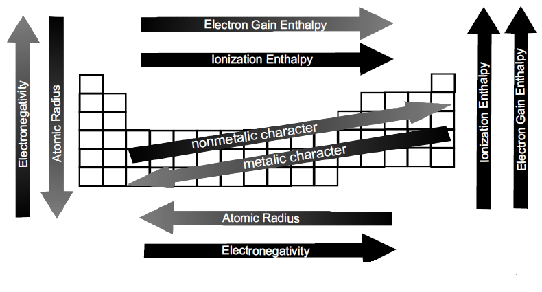

The periodic table is to chemistry like the laws of motion are to physics. In this lecture, we discover the secrets of the periodic table and meet the elements.
Ionization Energy and Photoelectron Spectroscopy
Electron Affinity
Development of Modern Periodic Table :
(a) Dobereiners Triads : He arranged similar elements in the groups of three elements called as triads
(b) Newlands Law of Octave : He was the first to correlate the chemical properties of the elements with their atomic masses.
(c) Lother Meyers Classification : He plotted a graph between atomic masses against their respective atomic volumes for a number of elements. He found the observations ;
(i) elements with similar properties occupied similar positions on the curve,
(ii) alkalimetals having larger atomic volumes occupied the crests,
(iii) transitions elements occupied the troughs,
(iv) the halogens occupied the ascending portions of the curve before the inert gases and
(v) alkaline earthmetals occupied the positions at about themid points of the descending portions of the curve. On the basis of these observations he concluded that the atomic volumes (a physical property) of the elements are the periodic functions of their atomic masses.
(d) Mendeleevs Periodic Table :
Mendeleevs Periodics Law
the physical and chemical properties of the elements are the periodic functions of their atomic masses.
Merits of Mendeleevs Periodic table:
It has simplified and systematised the study of elements and their compounds.
It has helped in predicting the discovery of new elements on the basis of the blank spaces given in its periodic table.
Demerits in Mendeleevs Periodic Table :
Position of hydrogen is uncertain .It has been placed in lA and VIIA groups
No separate positions were given to isotopes.
Anomalous positions of lanthanides and actinides in periodic table.
Order of increasing atomicweights is not strictly followed in the arrangement of elements in the periodic table.
Similar elements were placed in different groups.
It didnt explained the cause of periodicity.
(e) Long form of the Periodic Table or Moseleys Periodic Table :
MODERN PERIODIC LAW(MOSELEYS PERIODIC LAW) :
If the elements are arranged in order of their increasing atomic number, after a regular interval, elements with similar properties are repeated.
PERIODICITY :
The repetition of the properties of elements after regular intervals when the elements are arranged in the order of increasing atomic number is called periodicity.
CAUSEOF PERIODICITY :
The periodic repetition of the properties of the elements is due to the recurrence of similar valence shell electronic configurations after certain regular intervals.
Themodern periodic table consists of horizontal rows (periods) and vertical column (groups).
Periods :
There are seven periods numbered as 1, 2, 3, 4, 5, 6 and 7.
Each period consists of a series of elements having same valence shell.
Each period corresponds to a particular principal quantum number of the valence shell present in it.
Each period starts with an alkali metal having outermost electronic configuration as ns1.
Each period ends with a noble gas with outermost electronic configuration ns2np6 except helium having outermost electronic configuration as 1s2.
Each period starts with the filling of new energy level.
The number of elements in each period is twice the number of atomic orbitals available in energy level that is being filled.
Groups :
There are eighteen groups numbered as 1, 2, 3, 4, 5, ........... 13, 14, 15, 16, 17, 18.
Group consists of a series of elements having similar valence shell electronic configuration.
CLASSIFICATION OF THE ELEMENTS :
(a) s-Block Elements
Group 1 & 2 elements constitute the s-block. General electronic configuration is [inert gas] ns1-2
s-block elements lie on the extreme left of the periodic table.
(b) p-Block Elements
Group 13 to 18 elements constitute the p-block. General electronic configuration is [inert gas] ns2np1-6
(c) d-Block Elements
Group 3 to 12 elements constitute the d-block. General electronic configuration is [inert gas] (n 1) d1-10 ns1-2
(d) f-Block Elements
General electronic configuration is (n 2) f1-14 (n 1) d0-1 ns2. All f-block elements belong to 3rd group.
Elements of f-blocks have been classified into two series.
(1) Ist inner transition or 4 f-series, contains 14 elements 58Ce to 71Lu.
(2). IInd inner transition or 5 f-series, contains 14 elements 90Th to 103Lr.
Prediction of period, group and block :
Period of an element corresponds to the principal quantum number of the valence shell.
The block of an element corresponds to the type of subshellwhich receives the last electron.
The group is predicted from the number of electrons in the valence shell or/and penultimate shell as follows.
(a) For s-block elements ; Group no. = the no. of valence electrons
(b) For p-block elements ; Group no. = 10 + no. of valence electrons
(c) For d-block elements ;Group no. = no. of electrons in (n 1) d sub shell + no. of electrons in valence shell.
Metals and nonmetals :
The metals are characterised by their nature of readily giving up the electron(s) and from shinning lustre.Metals comprisesmore than 78%of all known elements and appear on the left hand side of the periodic table. Metals are usually solids at room temperature (exceptmercury, gallium). They have highmelting and boiling points and are good conductors of heat and electricity.Oxides ofmetals are generallybasic in nature (somemetals in their higher oxidation state form acid oxides e.g. CrO3).
Nonmetals do not lose electrons but take up electrons to formcorresponding anions. Nonmetals are located at the top right hand side of the periodic table. Nonmetals are usually solids, liquids or gases at room temperature with lowmelting and boiling points. They are poor conductors of heat and electricity. Oxides of nonmetals are generally acidic in nature.
Metalloids (Semimetals) :
The metalloids comprise of the elements B, Si, Ge, As, Sb and Te.
Diagonal relationship :
Diagonal relationship arises because of ;
on descending a group, the atoms and ions increase in size. On moving from left to right in the periodic table, the size decreases. Thus on moving diagonally, the size remains nearly the same. (Li = 1.23 Å & Mg = 1.36 Å ; Li+ = 0.76 Å & Mg2+ = 0.72 Å)
it is sometimes suggested that the diagonal relationship arises because of diagonal similarity in electronegativity values. (Li = 1.0 & Mg = 1.2 ; Be = 1.5 & Al = 1.5 ; B = 2.0 & Si = 1.8)
The periodicity of atomic properties :
Effective nuclear charge :
The effective nuclear charge (Zeff) = Z σ, (where Z is the actual nuclear charge (atomic number of the element) and is the shielding (screening) constant). The value of σ i.e. shielding effect can be determined using the Slaters rules.
Atomic radius :
Covalent radius : It is one-half of the distance between the centres of two nuclei (of like atoms) bonded by a single covalent bond. Covalent radius is generally used for nonmetals.
VanderWaals radius (Collision radius) : It is one-half of the internuclear distance between two adjacent atoms in two nearest neighbouring molecules of the substance in solid state.
Metallic radius (Crystal radius) :
It is one-half of the distance between the nuclei of two adjacentmetal atoms in the metallic crystal lattice.
Thus, the covalent, vanderWalls and metallic radius magnitude wise follows the order,
Ionic radius :
The effective distance from the centre of nucleus of the ion up to which it has an influence in the ionic bond is called ionic radius.
Ionisation Energy :
Ionisation energy (IE) is defined as the amount of energy required to remove themost loosely bound electron from an isolated gaseous atom to form a cation.
Factors Influencing Ionisation energy
Size of the Atom : Ionisation energy decreases with increase in atomic size.
Nuclear Charge : The ionisation energy increases with increase in the nuclear charge.
Shielding or screening effect : The larger the number of electrons in the inner shells, greater is the screening effect and smaller the force of attraction and thus ionization energy (IE) decreases.
Penetration effect of the electron : Penetration effect of the electrons follows the order s > p > d > f for, the same energy level. Higher the penetration of electron higher will be the ionisation energy.
ElectronicConfiguration : If an atomhas exactly half-filled or completely filled orbitals, then such an arrangement has extra stability
Electron Gain Enthalphy : (CHANGED TOPIC NAME)
The electron gain enthalpy ΔegHΘ, is the change in standardmolar enthalpy when a neutral gaseous atom gains an electron to form an anion.
The second electron gain enthalpy, the enthalpy change for the addition of a second electron to an initially neutral atom, invariably positive because the electron repulsion out weighs the nuclear attraction.
Group 17 elements (halogens) have very high negative electron gain enthalpies (i.e. high electron affinity) because they can attain stable noble gas electronic configuration by picking up an electron.
Across a period, with increase in atomic number, electron gain enthalpy becomesmore negative
Aswemove in a group from top to bottom, electron gain enthalpybecomes less negative
Noble gases have large positive electron gain enthalpies
Negative electron gain enthalpy of O or F is less than S or Cl.
Electron gain enthalpies of alkaline earthmetals are very less or positive
Nitrogen has very low electron affinity
completely filled orbitals of a subshell is comparatively more and the addition of an extra electron to such an system is difficult and hence the electron affinity value decreases.
Electronegativity :
Electronegativity is a measure of the tendency of an element to attract shared electrons towards itself in a covalently bonded molecules.
Paulings scale :
EA-B = Bond enthalpy/ Bond energy of A B bond.
EA-A= Bond energy of A A bond
EB-B = Bond energy of B B bond
(All bond energies are in kcal / mol)
All bond energies are in kJ / mol.
Mullikens scale :
Paulingss electronegativity XP isrelated toMullikens electronegativity XM as given below.
Periodicity of Valence or Oxidation States :
There aremanyelementswhich exhibit variable valence. This is particularly characteristic of transition elements and actinoids.
Periodic Trends and Chemical Reactivity :
In a group, basic nature of oxides increases or acidic nature decreases. Oxides of the metals are generally basic and oxides of the nonmetals are acidic. The oxides of the metalloids are generally amphoteric in nature. The oxides of Be, Al, Zn, Sn, As, Pb and Sb are amphoteric.
In a period the nature of the oxides varies from basic to acidic.
